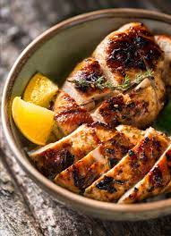

Grilled Chicken

Ovaj recept nije da vam otkrivam nesto strasno novo ,vec samo da pokazem nacin na koji ja to radim.
Probala sam puno nacina,ali ovaj mi je najdrazi,hrskava korica,a meso super socno,bas kako ja volim…
- Piletinu ocistiti, oprati, posusiti i posoliti.
- Mrvice pomijesati sa ribanim parmezanom sirom, to daje poseban okus, a i miris.Dodajte dobru saku ribanog parmezana.
- Lagano pobrasniti, uvaljati u jaje, pa u mrvice i samo kratko zaprziti na ulju zagrijanom na srednjoj vatri, dok se uhvati zlatkasta korica .Piletinu izvaditi iz ulja, staviti na papirnate maramice da se ulje ocijedi, pa onda sve posloziti u tepsiju na koju smo stavili resetku od kolaca ,tako da se prilikom pecenja ulje cijedi, a ne da se kupi u meso.
- Poslaganu piletinu pokriti aluminijskom foliom i peci nekih 40-tak minuta u dobro zagrijanoj pecnici.
- Provjeriti cackalicom ili raznjicem ako je piletina gotova, maknuti foliju pustiti malo da odstoji i posluziti po zelji.
Sastojci:
- Pile
- Par jaja
- Brsno
- Mrvice
- Parmezan
- So
- Ulje za przenje